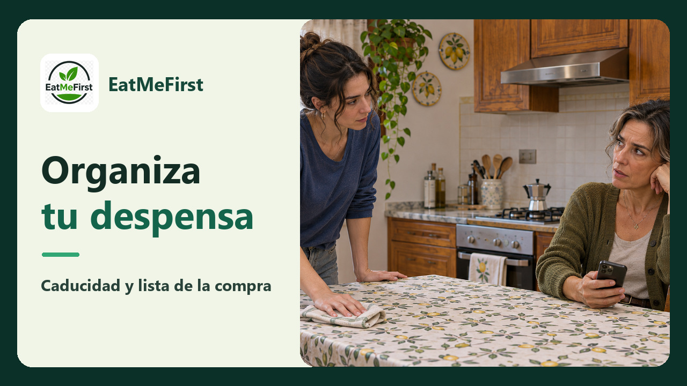

¿Quieres conocerla mejor?
Descubre lo que puedes hacer, con ejemplos y guías explicadas paso a paso.
Descubre cómo funcionaEATMEFIRST · MENOS DESPERDICIO, MÁS ORDEN EN CASA
Algo olvidado al fondo del frigorífico… y ese olor al abrirlo. EatMeFirst te ayuda a organizar los alimentos y otros productos de casa.
Con EatMeFirst mantienes las fechas en orden, recuerdas lo que tienes en casa y encuentras los productos terminados en la lista de la compra.

¡BIENVENIDO, ESTÁS EN EL LUGAR ADECUADO!
Esta web te presenta EatMeFirst. Descubre cómo funciona o practica con una despensa de ejemplo. Cuando quieras empezar, encontrarás el botón para usar la aplicación al final de la página.
Descubre lo que puedes hacer, con ejemplos y guías explicadas paso a paso.
Descubre cómo funcionaPrueba los controles con Max, Eva y Leo y productos de ejemplo. ¡Puedes equivocarte sin cambiar tu despensa real!
Aprende jugandoEATMEFIRST
No solo alimentos: también productos de limpieza, para animales y otras compras de casa. Estos fueron nuestros deseos. ¿Son también los tuyos?
«No quiero dar mi correo, mi acceso de Google ni mis datos de contacto. Ni inventar otra contraseña.»
Puedes empezar a organizar la despensa sin crear una cuenta.
«Quiero que productos, cantidades y consumos se queden en mi móvil o PC.»
Los productos, las cantidades y las notas se quedan en tu móvil: no nos envías la lista de tu despensa. Cuando buscas un código de barras, la aplicación envía ese código a catálogos externos para encontrar información del producto, no el contenido de tu despensa.
«Quiero entender qué hacer, aunque no sea un experto.»
Los botones de información explican cada función. Max, Eva y Leo te ayudan con palabras sencillas y alguna broma.
«¿Y la verdura del mercado, lo que compro a granel o preparo en casa?»
Escribe el nombre, la cantidad, dónde lo guardas y, si corresponde, una fecha. También puedes incluir mermeladas caseras, sobras y porciones congeladas.
«Despensa, nevera, garaje… sin tener que recordarlo todo.»
Elige tus ubicaciones y categorías. Puedes mover solo algunas unidades de un paquete y ver dónde están.
«¡Medio salchichón o media botella siguen en casa!»
Retira unidades enteras o indica el contenido restante. Un producto no tiene que desaparecer del inventario por haberlo abierto.
«Quiero ver las fechas próximas antes de encontrar algo olvidado al fondo de la nevera.»
El inventario ordena las fechas y los avisos llaman tu atención. Se distinguen las fechas estrictas de las orientativas.
«Quiero encontrar lo que se ha terminado y añadir lo que se me ocurra.»
Los productos registrados como terminados pasan a la lista. Añade notas y marca tus compras: se oscurecen, se tachan y pasan al final.
AH, SE ME OLVIDABA…
¡Sí! Todo lo que te hemos contado aquí se puede usar gratis. ¡No es una prueba de 30 días!
«¿Dónde está el truco?» Jejeje… por ahora ni siquiera hay publicidad. Si algún día la añadimos, queremos que sea discreta.
El guardado automático e inmediato de los cambios en tu móvil seguirá siendo siempre gratuito.
¿Vemos cómo funciona con más detalle?
Practica con productos inventados, sin tocar tu inventario real.

La presentación en YouTube · ~5 min
Guías paso a paso con Max, Eva y Leo, consejos prácticos y adelantos de las funciones que estamos estudiando. Suscribirse al canal es gratis.
Tu despensa, las fechas y tu lista de la compra en el móvil. Sin instalar programas ni registrarte.